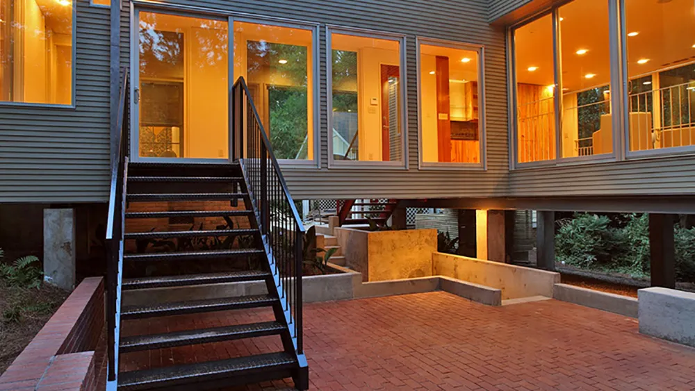
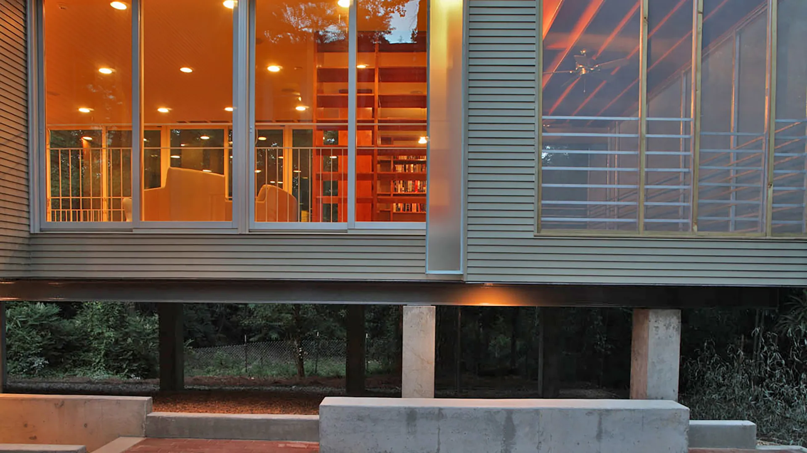
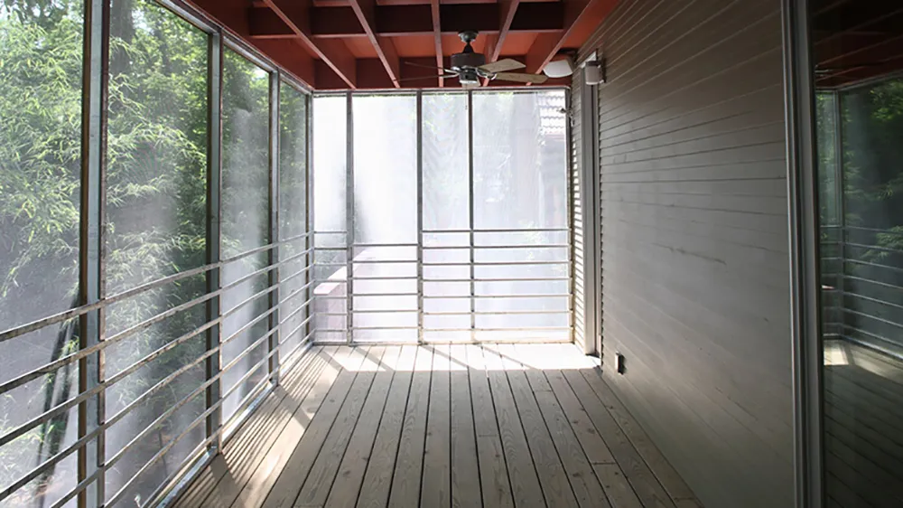
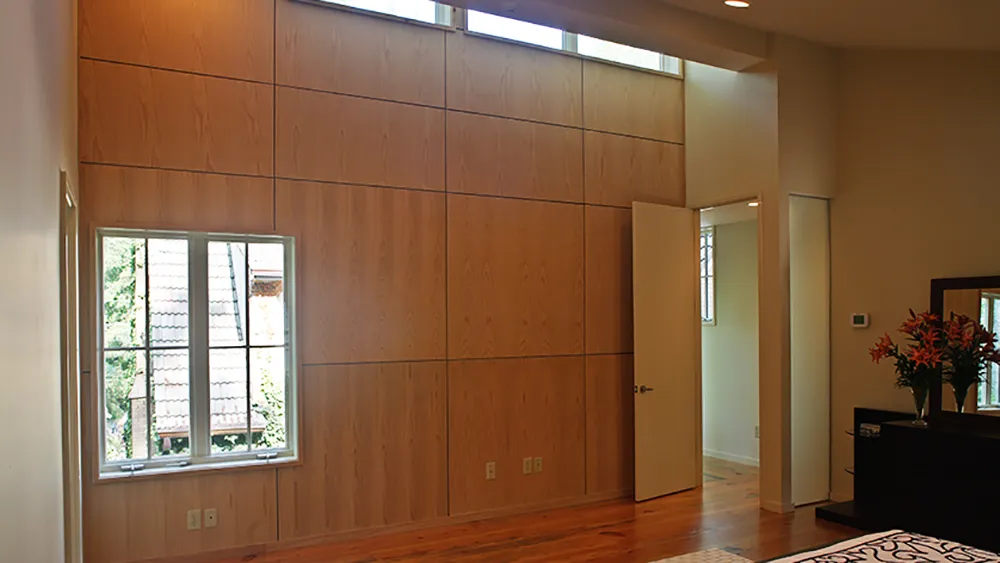
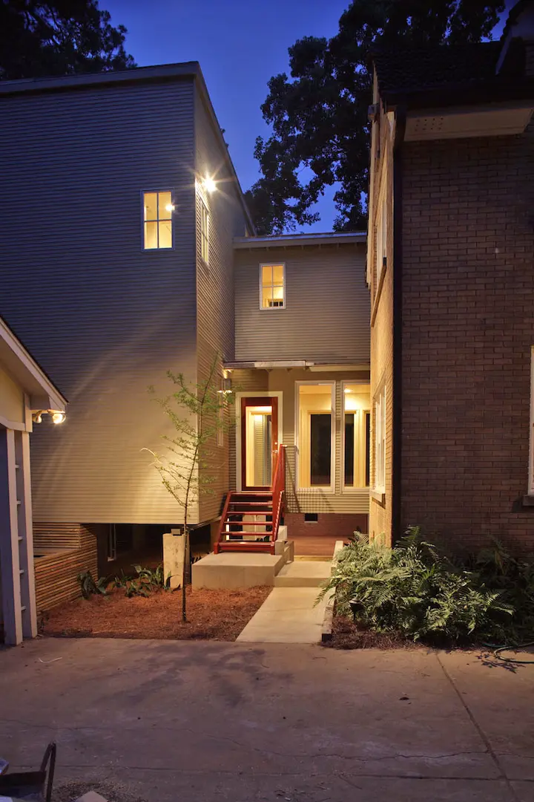
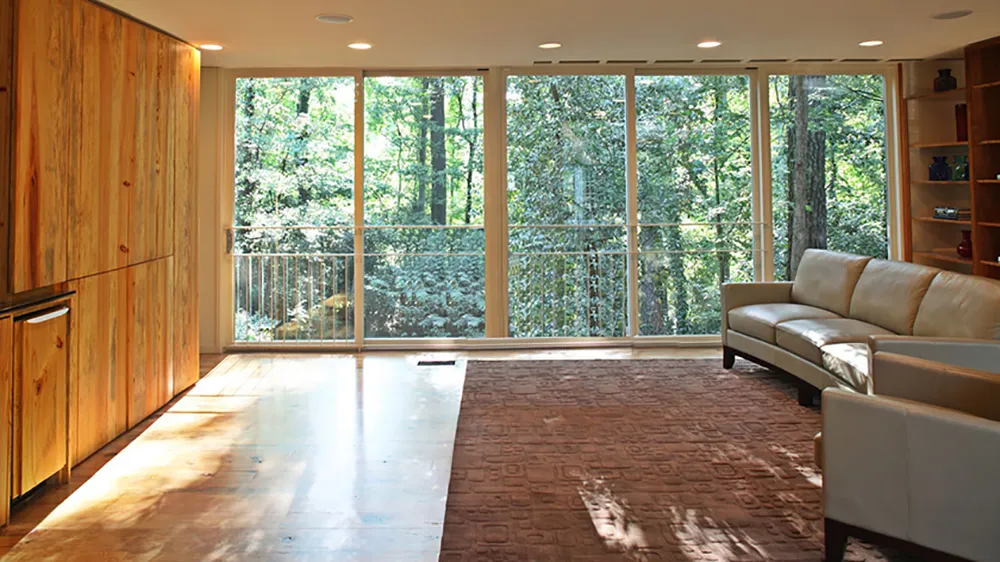
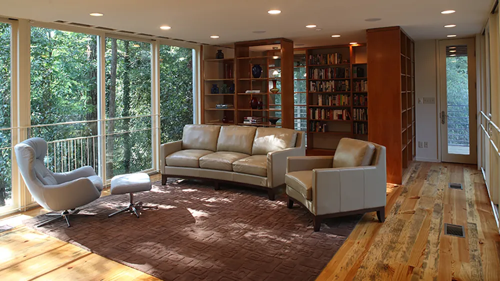
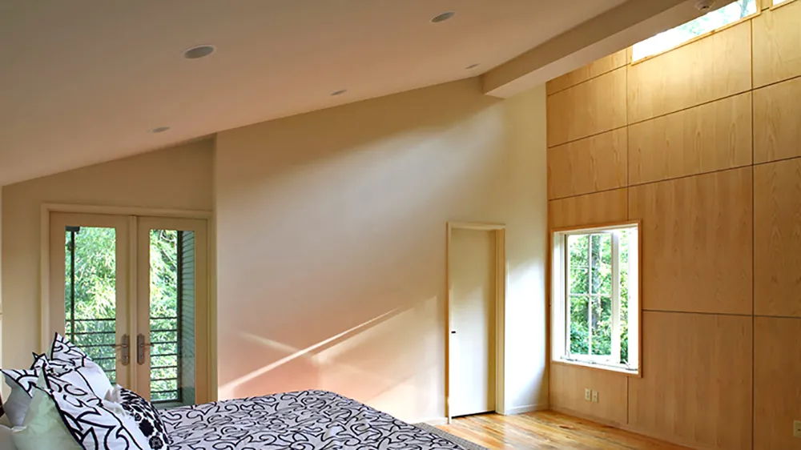
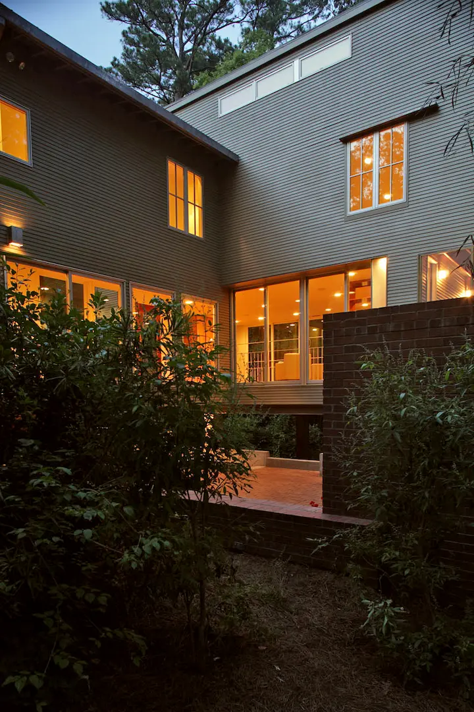
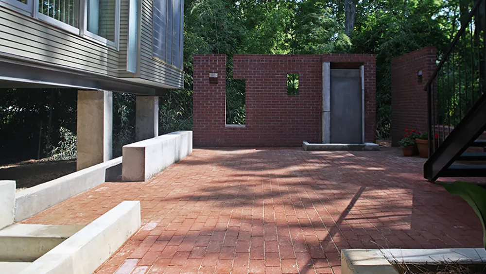

A Belhaven Residential Addition
The existing residence, a two-story Tudor Revival with large windows that allowed transparence from the street, overlooked a sloping wooded property trailing to a city park. Primary programmatic concerns for the proposed addition was preserving the transparency of the existing structure, and maintaining views and accessibility to the woods. The solution involved constructing an elevated rectilinear addition, lightly connecting to the existing residence with a double-level bridge.
Winner 2008 AIA Mississippi Merit Award
Completed 2007









